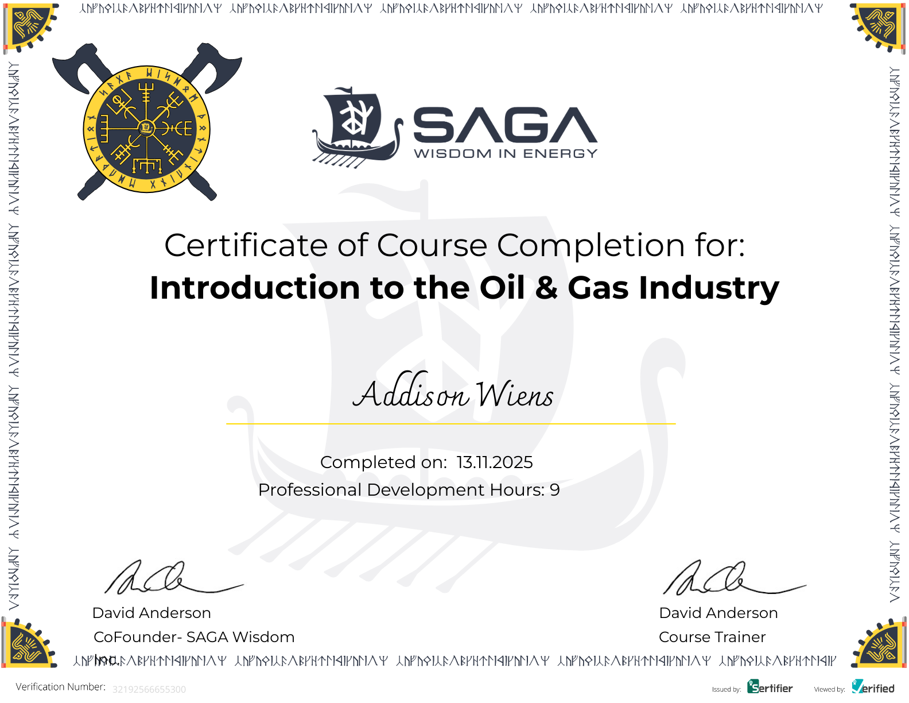
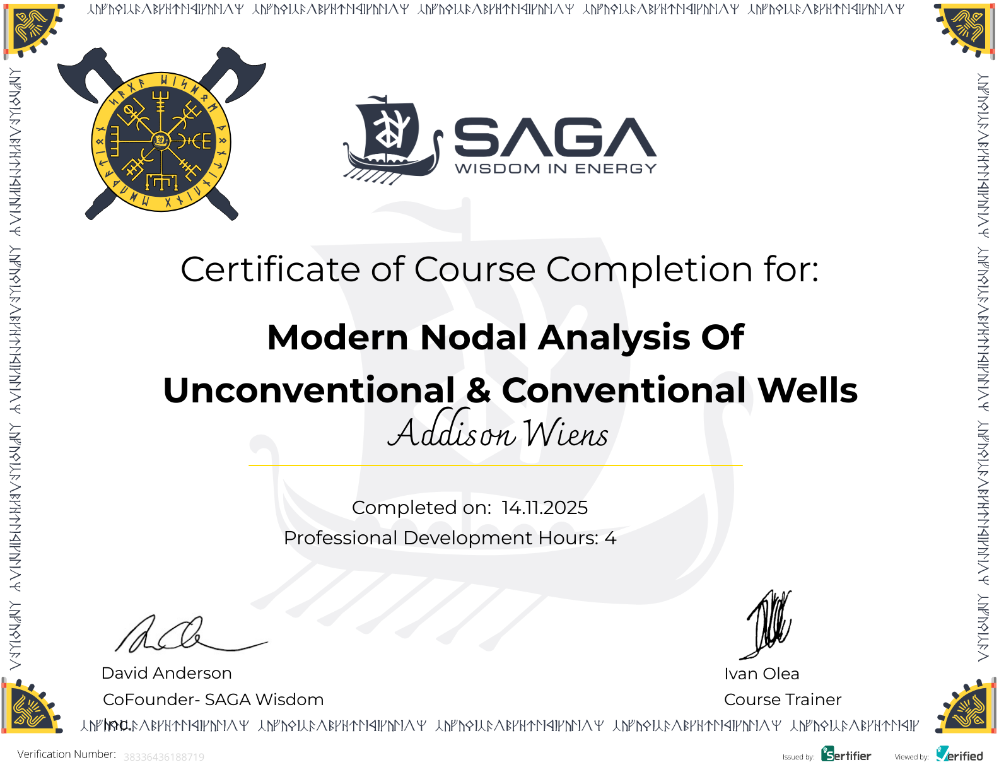
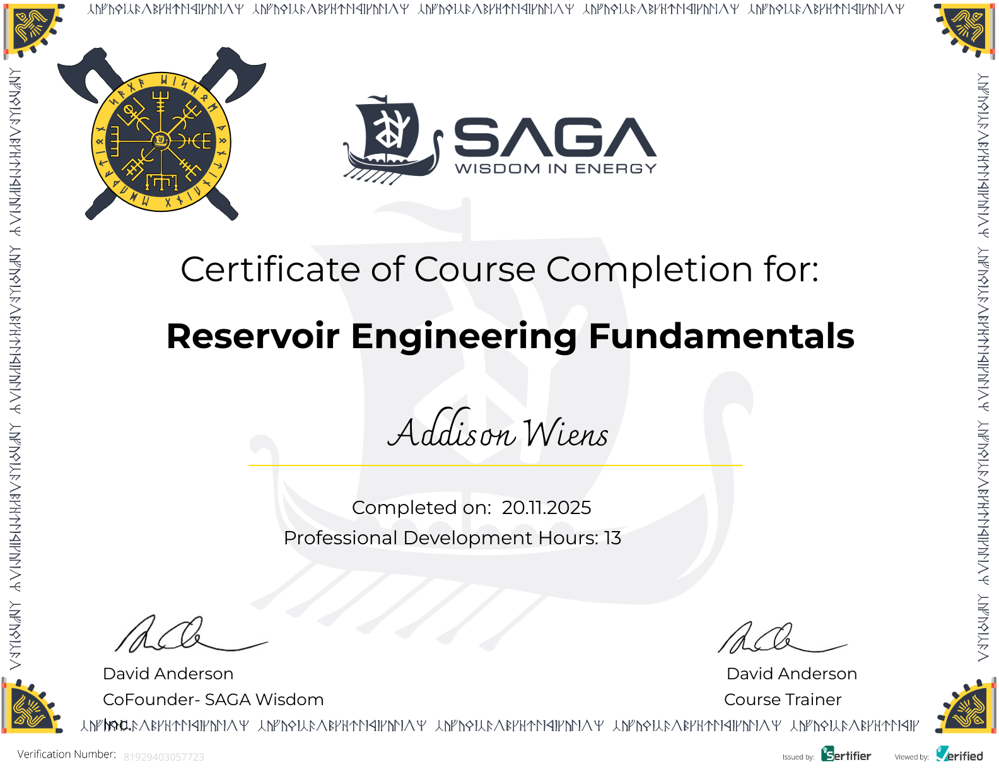
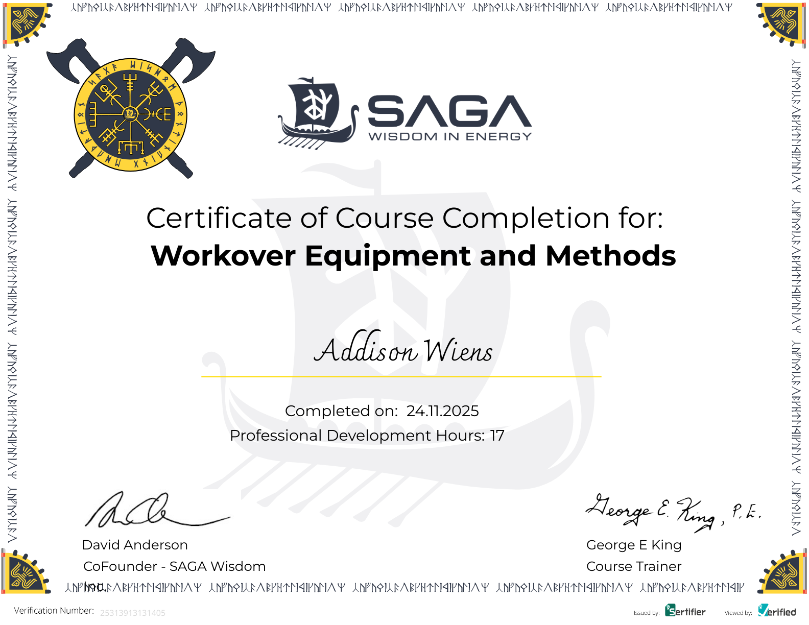
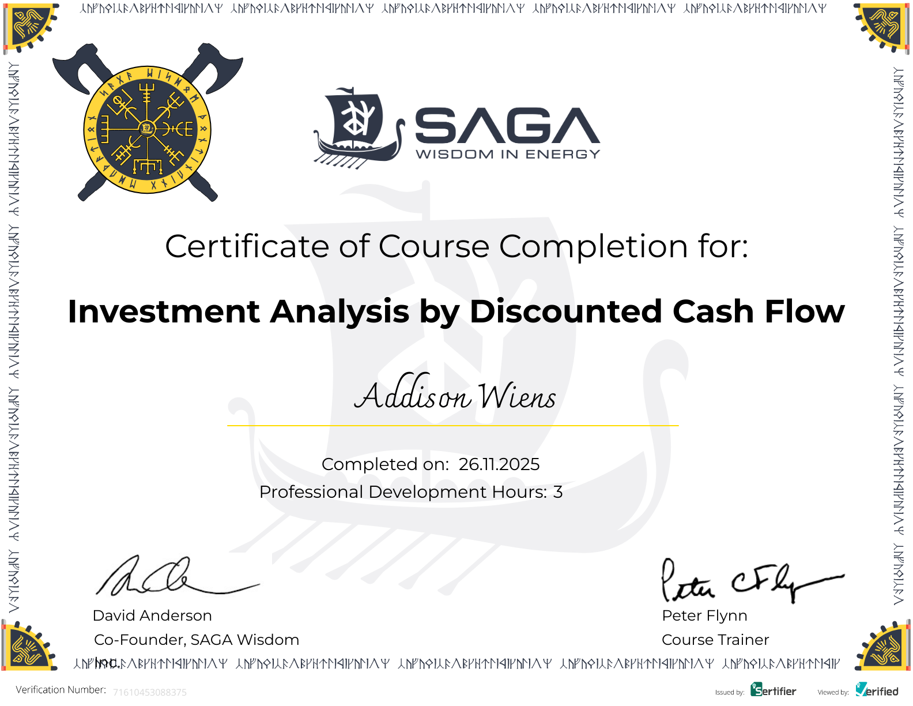
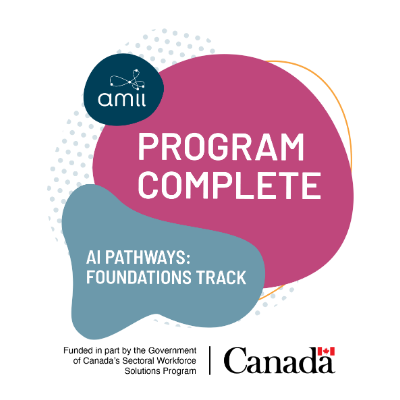
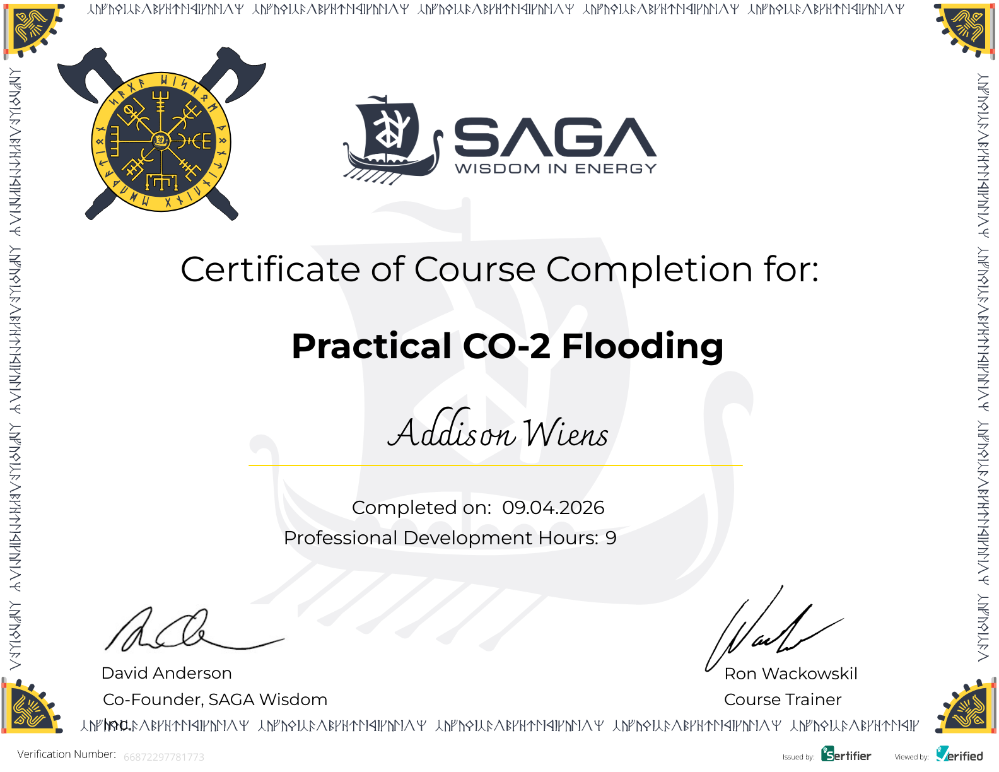
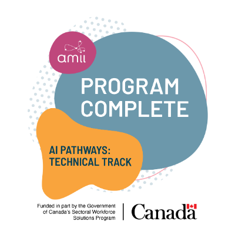

About
Mechanical & Materials Engineering Student
I’m Addison Wiens, a Mechanical & Materials Engineering student at Queen’s University with a completed Certificate in Business. Originally from Saskatchewan, I’m interested in practical engineering problems, field operations, production optimization, and data-driven decision-making.
My experience in upstream oil and gas has focused on engineering analytics, operational problem-solving, and tools that turn complex field data into clear engineering decisions.
Engineering Focus
I’m especially interested in the intersection of mechanical systems, production engineering, and analytics. I enjoy projects where technical analysis can be translated into practical operational improvements.
My work often involves combining engineering fundamentals, field context, and structured data analysis to better understand equipment performance and identify optimization opportunities.
Background
My academic background combines mechanical and materials engineering with business fundamentals, giving me both a technical and economic perspective when approaching engineering problems.
Through field and office-based experience, I’ve developed an appreciation for solutions that are technically sound, operationally practical, and easy for teams to implement.
Technical Interests
Production Engineering
- Production optimization
- Artificial lift systems
- Well diagnostics
- Field operations
Engineering Analytics
- SQL-based analysis
- Dashboard development
- Operational data modeling
- Screening-level decision tools
Mechanical Design
- CAD modeling
- Kinematics
- Mechanical systems
- Engineering visualization
Tools & Skills
- SQL, Tableau, Power BI, Excel, PowerQuery, and VBA.
- Python, MATLAB, C/C++, and basic software development workflows.
- SolidWorks, Fusion, engineering modeling, and technical documentation.
- Production analysis, economic evaluation, and field optimization support.
My Hobbies
- Reading anything I can get my hands on. I'm currently reading the Expanse Series for the fifth or sixth time.
- Running. I've run both a half-marathon and half-Olympic triathlon in the past, but nothing on the horizon at the moment.
- Teaching myself to play the piano, slowly but steadily.
Professional Development & Certificates
In addition to my academic studies and project experience, I have completed various industry-focused production and optimization engineering training programs.

Introduction to the Oil and Gas Industry
Introductory course to fundamentals across upstream, midstream, and downstream operations. Covered petroleum exploration and drilling, well completion and stimulation, production, processing and distribution, introduction to petroleum engineering, and the global energy market.

Modern Nodal Analysis of Unconventional & Conventional Wells
Developed a practical understanding of production system analysis using nodal analysis techniques. Covered reservoir inflow performance, wellbore pressure losses, multiphase flow behavior, and artificial lift interactions to identify production bottlenecks and optimize well performance.

Reservoir Engineering Fundamentals
Built a foundation in reservoir engineering principles including material balance, Darcy's law, reservoir fluid properties, and production forecasting. Emphasized quantitative problem solving, reservoir performance evaluation, and engineering decision-making.

Workover Equipment and Methods
Studied well intervention equipment, repair techniques, and operational best practices used to restore and improve well performance. Topics included workover planning, corrosion and erosion management, stimulation methods, and failure prevention strategies.

Investment Analysis by Discounted Cash Flow
Learned to evaluate engineering projects using discounted cash flow analysis, internal rate of return (IRR), and risk-adjusted economic decision-making. Developed the ability to assess project value and compare capital investment opportunities.
Understanding Financial Statements
Gained an understanding of income statements, balance sheets, and cash flow statements, with a focus on how financial performance influences engineering and business decisions. Developed skills for interpreting financial information and evaluating company performance.

AI Pathways: Energizing Canada’s Low Carbon Workforce - Foundations Track
Completed foundational training in artificial intelligence, machine learning, and responsible AI implementation. Covered AI strategy, risk management, governance, and practical approaches for integrating AI technologies into engineering and business environments.

Practical CO2 Flooding
Studied the design, operation, and optimization of CO₂ enhanced oil recovery projects. Covered flood performance, monitoring techniques, reservoir selection criteria, and the relationship between CO₂ flooding and emerging CCUS opportunities.

AI Pathways: Energizing Canada’s Low Carbon Workforce - Technical Track
Developed practical machine learning skills including model development, deployment, and MLOps principles. Completed a technical capstone project focused on applying AI solutions to real-world energy industry challenges.
Fundamentals of ESPs
Learned the design, operation, and application of Electrical Submersible Pump systems for artificial lift. Covered system components, performance considerations, troubleshooting methods, and artificial lift selection criteria.